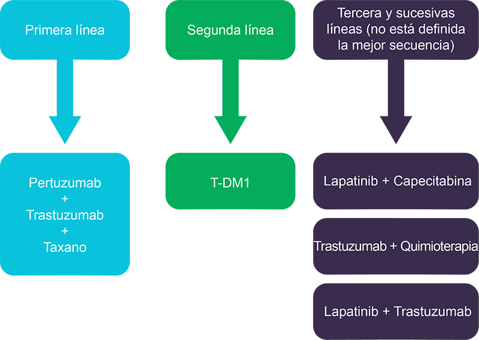

Conocer el mecanismo de acción y resultados de los tratamientos dirigidos frente a HER2 en pacientes con cáncer de mama metastásico.
Conocer el algoritmo del tratamiento de pacientes con cáncer de mama avanzado HER2 positivo.
La sobreexpresión de HER2 está presente en un 15-20% de los cánceres de mama asociándose a un comportamiento más agresivo y a un peor pronóstico (1). La investigación realizada durante las últimas décadas ha conducido al desarrollo de terapias dirigidas frente a HER2 y a la aprobación de trastuzumab, pertuzumab, lapatinib y T-DM1para esta población de pacientes.
Trastuzumab y pertuzumab son anticuerpos monoclonales que se unen a diferentes epítopos de HER2 inhibiendo su dimerización y posterior activación de cascadas intracelulares. Lapatinib es un inhibidor reversible de la tirosina quinasa de HER1 y HER2 con actividad en pacientes que han progresado a tratamiento previo con trastuzumab. T-DM1 es un inmunoconjugado de trastuzumab que permite la liberación intracelular del agente citotóxico emtansina de manera selectiva minimizando la exposición en tejidos sanos (tabla 1).
Trastuzumab |
Lapatinib |
Pertuzumab |
T-DM1 |
|
|---|---|---|---|---|
Clase terapéutica |
Anticuerpo monoclonal |
Inhibidor de tirosina-quinasa |
Anticuerpo monoclonal |
Anticuerpo conjugado |
Mecanismo de acción |
Inhibición de HER2 y HER3 independiente de ligando. |
Inhibición dual de HER1 y HER2 |
Inhibición del dominio de dimerización de HER2 |
Liberación intracelular del emtansina en células HER2 + |
Indicaciones aprobadas en cáncer de mama HER2+ |
Cáncer de mama precoz |
Cáncer de mama avanzado: |
Cáncer de mama precoz de alto riesgo |
Cáncer de mama avanzado tras progresión a trastuzumab y taxanos |
Tabla 1. Terapias dirigidas aprobadas en cáncer de mama HER2 postivo.
La utilización de terapias dirigidas a HER2 ha modificado la historia natural del cáncer de mama HER2 positivo lo que ha llevado triplicar la supervivencia a 5 años alcanzándose hoy en día medianas de supervivencia global por encima de los 50 meses (2).
La población a tratamiento de primera línea comprende:
Pacientes metastásicas de novo.
Recurrencia después de 12 meses de haber finalizado el tratamiento adyuvante con trastuzumab.
Desde finales de la década de los 90, la combinación de trastuzumab y taxanos (paclitaxel o docetaxel) mostró un beneficio tanto en porcentaje de respuestas, supervivencia libre de progresión y supervivencia global frente a quimioterapia sola lo que llevó a considerarla el tratamiento estándar (3). La combinación de trastuzumab y vinorelbina ha mostrado resultados similares a los alcanzados con los taxanos convirtiéndose en alternativas a los mismos (4). En mujeres postmenopaúsicas con cáncer de mama RH positivo y HER2 positivo, la combinación de inhibidores de aromatasa con trastuzumab ofrece un beneficio en el porcentaje de respuestas y en la supervivencia libre de progresión frente a tratamiento hormonal sólo (5, 6). No obstante, el resultado de esta combinación es inferior al alcanzado con quimioterapia y trastuzumab por lo que sólo se recomienda valorar su utilización en pacientes de bajo riesgo (ausencia de enfermedad visceral, baja carga tumoral).
Sobre esta base se han desarrollado estudios con otras terapias anti-HER2 comparándose frente a trastuzumab o combinándose con el mismo.
El estudio CLEOPATRA es un ensayo fase III randomizado que evaluó la eficacia y seguridad de pertuzumab en combinación con trastuzumab y docetaxel frente a trastuzumab y docetaxel en primera línea de tratamiento de cáncer de mama metastásico HER2 positivo. El objetivo principal del estudio fue demostrar un beneficio en supervivencia libre progresión y como objetivos secundarios evaluar el porcentaje de respuestas, supervivencia global y la seguridad. Se incluyeron 808 pacientes mostrándose un incremento de 6.1 meses (18.5 vs 12.4; HR 0.62, p< 0.001) en la supervivencia libre de progresión y de 15.7 meses en la supervivencia global (56.5 vs 40.8; HR 0.68, p< 0.001) en el grupo de pertuzumab frente al grupo control (7). La administración de pertuzumab se asoció a un incremento en la incidencia de diarrea, mucositis y rash sin observarse un incremento en la toxicidad cardiaca.
Posteriormente, el estudios PERUSE y VELVET han confirmado la actividad de pertuzumab en primera línea de tratamiento en combinación con otros taxanos (paclitaxel y nabpaclitaxel) y con vinorelbina respectivamente (8, 9).
Más recientemente, el estudio PERTAIN evaluó el beneficio de añadir pertuzumab a la combinación de trastuzumab y un inhibidor de aromatasa. Al igual que en el estudio CLEOPATRA el tratamiento con pertuzumab se asoció con un incremento en la mediana de supervivencia libre de progresión (18.8 vs 15.8 meses;HR 0.65, p=0.007). El beneficio fue independiente de haber recibido o no quimioterapia de inducción con taxanos (10).
Estos resultados han llevado a considerar el tratamiento con pertuzumab + trastuzumab + taxanos la terapia estándar en primera línea de cáncer de mama HER2 positivo y a valorar su combinación con inhibidores de aromatasa en pacientes con tumores receptores hormonales positivos.
En el estudio fase III MARIANNE, 1095 pacientes fueron randomizadas a recibir tratamiento con trastuzumab y taxanos, T-DM1 en monoterapia o T-DM1 en combinación con pertuzumab. La supervivencia libre de progresión alcanzada con T-DM1 tanto en monoterapia como en combinación con pertuzumab fue no inferior al tratamiento trastuzumab y taxano (11). El perfil de toxicidad fue favorable a T-DM1. No obstante, el comparador utilizado en el estudio MARIANNE no es hoy en día el tratamiento estándar lo que limita extraer conclusiones sobre el papel de T-DM1 en primera línea.
En primera línea el estudio MA. 31 comparó el tratamiento con trastuzumab y taxanos frente a lapatinib y taxanos. El brazo de la combinación con lapatinib se asoció a un incremento de la toxicidad grado 3/4 y a una peor supervivencia libre de progresión que la combinación con trastuzumab (9 vs 11.2 meses; HR 1.37, p=0.001) por lo que se desaconseja su utilización en primera línea en combinación con taxanos (12).
En pacientes postmenopáusicas con tumores receptores hormonales positivos la combinación de lapatinib con letrozol aumentó tanto el porcentaje de respuestas (48% vs 29%; OR 0.4,p=0.003) como la supervivencia libre de progresión frente a letrozol en monoterapia (8.2 vs 3.0 meses; HR 0.71, p= 0.019) (13). Al igual que ocurre con la combinación de trastuzumab e inhibidores de aromatasa, estos resultados son inferiores a los conseguidos con quimioterapia y trastuzumab por lo que sólo se recomienda valorar su utilización en pacientes de bajo riesgo (ausencia de enfermedad visceral, baja carga tumoral) o con contraindicación para recibir quimioterapia.
La población incluida en estudios de segunda línea comprende:
Pacientes que hayan finalizado el tratamiento adyuvante con trastuzumab en los 12 meses previos a la recurrencia.
Pacientes que han progresado a un primer tratamiento con trastuzumab para la enfermedad avanzada.
Tras progresión a una primera línea con trastuzumab el estudio GBG 26/BIG 03-/05 randomizó a las pacientes a recibir capecitabina sola o asociada a trastuzumab. El brazo de tratamiento con trastuzumab presentó una mejoría en el porcentaje de respuestas (27% vs 48.1%, OD 2.5, p=0.011) y en el tiempo hasta la progresión (5.6 vs 8.2 meses; HR 0.69, p=0.03) (14).
En el estudio PHEREXA se evaluó la actividad de pertuzumab en segunda línea tras progresión previa a trastuzumab y taxanos. La adición de pertuzumab no aumentó la supervivencia libre de progresión al añadirse a un régimen de trastuzumab y capecitabina por lo que no se recomienda su administración más allá de la primera línea de tratamiento (15).
El estudio EMILIA evaluó la seguridad y eficacia de T-DM1 comparado con lapatinib y capecitabina en pacientes con cáncer de mama HER2 positivo previamente tratados con trastuzumab y taxanos. El tratamiento con T-DM1 demostró una mejoría significativa en el porcentaje de respuestas (43.6% vs 30.8%, p < 0.001), supervivencia libre de progresión (9.6 vs 6.4 meses; HR 0.65, p < 0.001) y en supervivencia global (HR 0.62, p=0.0005). El tratamiento con T-DM1 se asoció con un aumento en la incidencia de hipertransaminasemia y trombopenia mientras que la diarrea, nauseas, vómitos y síndrome mano-pie fueron más frecuentes con lapatinib y capecitabina. En cualquier caso, la frecuencia de efectos adversos grado 3 o 4 fue mayor con lapatinib y capecitabina que con T-DM1 (16). Estos resultados han hecho que T-DM1 sea considerado el tratamiento estándar en segunda línea tras progresión a trastuzumab y taxanos con o sin pertuzumab.
La combinación de lapatinib y capecitabina mejoró el tiempo hasta la progresión frente a capecitabina (8.4 vs 4.4 meses; HR 0.34, p< 0.001) en pacientes que habían progresado a un tratamiento previo con antraclinas, taxanos y trastuzumab (17). No obstante, debido a la inferioridad frente al tratamiento con T-DM1 demostrada en el estudio EMILIA, actualmente se considera una opción para tercera y sucesivas líneas de tratamiento.
Dado que la sobreexpresión de HER2 persiste y continúa siendo relevante tras la progresión a trastuzumab se han desarrollado estrategias para revertir esta resistencia que incluyen tanto la modificación del régimen de quimioterapia como el cambio en la terapia dirigida.
A pesar de que no existe evidencia procedente de ensayos randomizados que soporten continuar el tratatamiento con trastuzumab más allá de la progresión a dos líneas de tratamientos, estudios retrospectivos muestran una mejoría tanto en porcentaje de respuestas como en tiempo hasta la progresión al combinar diferentes quimioterapias con trastuzumab en esta población de pacientes (18-20).
Este beneficio del mantenimiento de trastuzumab más allá de la progresión se observa no sólo asociado a la quimioterapia si no también en combinación con terapias dirigidas como lapatinib. Así, en pacientes muy pretratadas el tratamiento con trastuzumab y lapatinib mostró una mejoría significativa frente a lapatinib en supervivencia libre de progresión y en supervivencia global (14 vs 9. meses; HR 0.74, p=0.026) (21).
En el estudio TH3RESA se incluyeron pacientes que habían progresado tanto a trastuzumab como a lapatinib y que habían recibido al menos 2 líneas de tratamiento para la enfermedad avanzada. Un total de 602 pacientes fueron randomizadas a recibir T-DM1 vs tratamiento a elección del investigador observándose un beneficio en SLP (6.2 vs 3.3 meses; HR 0.52, p< 0.0001) así como una menor incidencia de eventos adversos grado ≥ 3 en las pacientes tratadas con T-DM1 (22). Estos resultados han conducido a recomendar T-DM1 como tratamiento de elección tras 2 líneas de tratamiento en pacientes no expuestas previamente al fármaco.
La incidencia de metástasis cerebrales se ha visto incrementada durante los últimos años de manera paralela a la mejoría en la supervivencia global en pacientes con cáncer de mama HER2 positivo. Uno de los factores que contribuyen a este aumento es la presencia de la barrera hematoencefálica (BHE) que convierte al sistema nervioso central en un santuario para las células tumorales. La permeabilidad de la BHE disminuye a medica que aumenta el peso molecular del fármaco por lo que trastuzumab, debido a su peso molecular, no puede atravesar la BHE intacta. No obstante, existen múltiples factores como la presencia de metástasis cerebrales, el tratamiento quirúrgico y la radioterapia que pueden romper la BHE facilitando el acceso de fármacos (23).
A pesar de la permeabilidad limitada de la BHE, la administración de tratamiento frente a HER2 mejora el control sistémico de la enfermedad contribuyendo a la mejoría en la supervivencia global. De este modo, las pacientes tratadas con trastuzumab tienen un tiempo hasta la aparición de metástasis cerebrales más prolongado y mayor supervivencia tras el diagnóstico de metástasis cerebrales que las pacientes no tratadas con trastuzumab (24,25). Existen pocos datos con pertuzumab en pacientes con afectación del SNC dado que las pacientes con metástasis cerebrales fueron excluidas del estudio CLEOPATRA. No obstante, las pacientes tratadas con pertuzumab retrasaron el tiempo hasta la aparición de metástasis cerebrales comparadas con el brazo contro l (7).
Debido a su menor tamaño, lapatinib potencialmente penetra la BHE. No obstante, la concentración alcanzada en el SNC muestra gran variación interindividual con una concentración media del 10-20% de la alcanzada en lesiones metastásicas periféricas (26). Aunque lapatinib en monoterapia tiene una baja actividad, en combinación con capecitabina alcanza porcentajes de respuestas del 20% tras progresión a radioterapia y del 65.9% en pacientes con metástasis cerebrales no irradiadas (27, 28).
En un análisis exploratorio del estudio EMILIA se observó un porcentaje de progresión en el SNC similar entre T-DM1 y capecitabina. No obstante, el tratamiento con T-DM1 se asoció con una mejoría en la supervivencia global en pacientes en pacientes con metástasis en el SNC (26.8 vs 12.9 meses, p< 0.008)(16). En base a estos resultados, el algoritmo de tratamiento no debería diferir en las pacientes con afectación del SNC del propuesto para el resto de las pacientes con cáncer de mama metastásico HER2 positivo.
Figura 1. Algoritmo de tratamiento del cáncer de mama metastásico HER2 positivo.
En primera línea de tratamiento de pacientes con cáncer de mama HER2 positivo se recomienda la combinación de pertuzumab, trastuzumab y taxanos en base a los resultados del estudio CLEOPATRA.
En pacientes que reciben una combinación de quimioterapia y tratamiento frente a HER2, la quimioterapia debería mantenerse durante 4-6 meses o hasta alcanzar la máxima respuesta. Tras finalizar la quimioterapia se debe continuar con la terapia frente a HER2 hasta progresión o toxicidad inaceptable.
Si una paciente experimenta una recurrencia después de 12 meses de haber finalizado el tratamiento adyuvante con trastuzumab se deberían aplicar las recomendaciones de tratamiento de primera línea.
Si una paciente finalizó tratamiento adyuvante con trastuzumab en los 12 meses previos a la recurrencia se deberían aplicar las recomendaciones de tratamiento de segunda línea.
Tras progresión a una primera línea de tratamiento con terapia dirigida frente a HER2 se recomienda mantener tratamiento frente a HER2 en segunda y sucesivas líneas.
Tras progresión a una primera línea de tratamiento con terapia dirigida frente a HER2 el tratamiento de elección es trastuzumab emtansina (T-DM1) en base a los resultados del estudio EMILIA.
Tras progresión a segunda o sucesivas líneas de terapias frente a HER2 el tratamiento de elección es T-DM1 en caso de no haberlo recibido previamente en base a los resultados del estudio TH3RESA.
Las combinaciones de lapatinib con capecitabina, trastuzumab con quimioterapia (capecitabina, vinorelbina) y lapatinib con trastuzumab son alternativas válidas tras progresión a trastuzumab, pertuzumab y T-DM1.
La secuencia de tratamiento en pacientes con enfermedad metastásica cerebral es la misma que para el resto de pacientes a día de hoy.
Bibliografía |
|
|---|---|
1 |
Slamon DJ, Clark GM, Wong SG, Levin WJ, Ullrich A, McGuire WL. Human breast cancer: correlation of relapse and survival with amplification of the HER-2/neu oncogene. Science. 1987 Jan 9;235(4785):177–82. |
2 |
Roth J, Bajaj P, Sullivan SD et al. Survival gains from advances in first-line systemic therapy for HER2 overexpressing metastatic breast cancer in the U.S., 1995–2015. Abstract 263P, ESMO Congress 2017, Madrid, Spain. In. |
3 |
Slamon DJ, Leyland-Jones B, Shak S, Fuchs H, Paton V, Bajamonde A, et al. Use of chemotherapy plus a monoclonal antibody against HER2 for metastatic breast cancer that overexpresses HER2. N Engl J Med. 2001 Mar 15;344(11):783–92. |
4 |
Andersson M, Lidbrink E, Bjerre K, Wist E, Enevoldsen K, Jensen AB, et al. Phase III randomized study comparing docetaxel plus trastuzumab with vinorelbine plus trastuzumab as first-line therapy of metastatic or locally advanced human epidermal growth factor receptor 2-positive breast cancer: the HERNATA study. J Clin Oncol Off J Am Soc Clin Oncol. 2011 Jan 20;29(3):264–71. |
5 |
Kaufman B, Mackey JR, Clemens MR, Bapsy PP, Vaid A, Wardley A, et al. Trastuzumab plus anastrozole versus anastrozole alone for the treatment of postmenopausal women with human epidermal growth factor receptor 2-positive, hormone receptor-positive metastatic breast cancer: results from the randomized phase III TAnDEM study. J Clin Oncol Off J Am Soc Clin Oncol. 2009 Nov 20;27(33):5529–37. |
6 |
Huober J, Fasching PA, Barsoum M, Petruzelka L, Wallwiener D, Thomssen C, et al. Higher efficacy of letrozole in combination with trastuzumab compared to letrozole monotherapy as first-line treatment in patients with HER2-positive, hormone-receptor-positive metastatic breast cancer - results of the eLEcTRA trial. Breast Edinb Scotl. 2012 Feb;21(1):27–33. |
7 |
Swain SM, Baselga J, Kim S-B, Ro J, Semiglazov V, Campone M, et al. Pertuzumab, trastuzumab, and docetaxel in HER2-positive metastatic breast cancer. N Engl J Med. 2015 Feb 19;372(8):724–34. |
8 |
Perez EA, López-Vega JM, Petit T, Zamagni C, Easton V, Kamber J, et al. Safety and efficacy of vinorelbine in combination with pertuzumab and trastuzumab for first-line treatment of patients with HER2-positive locally advanced or metastatic breast cancer: VELVET Cohort 1 final results. Breast Cancer Res BCR. 2016 13;18(1):126. |
9 |
Bachelot TD, Ciruelos E, Peretz-Yablonski T, Puglisi F, Schneeweiss A, Campone M, et al. First-line pertuzumab (P), trastuzumab (H), and taxane therapy for HER2-positive locally recurrent/metastatic breast cancer (LR/mBC): Interim safety results (N=704) from PERUSE. J Clin Oncol. 2014 May 20;32(15_suppl):548–548. |
10 |
Rimawi M, Ferrero J-M, de la Haba-Rodriguez J, Poole C, De Placido S, Osborne CK, et al. First-Line Trastuzumab Plus an Aromatase Inhibitor, With or Without Pertuzumab, in Human Epidermal Growth Factor Receptor 2-Positive and Hormone Receptor-Positive Metastatic or Locally Advanced Breast Cancer (PERTAIN): A Randomized, Open-Label Phase II Trial. J Clin Oncol Off J Am Soc Clin Oncol. 2018 Oct 1;36(28):2826–35. |
11 |
Perez EA, Barrios C, Eiermann W, Toi M, Im Y-H, Conte P, et al. Trastuzumab Emtansine With or Without Pertuzumab Versus Trastuzumab Plus Taxane for Human Epidermal Growth Factor Receptor 2-Positive, Advanced Breast Cancer: Primary Results From the Phase III MARIANNE Study. J Clin Oncol Off J Am Soc Clin Oncol. 2017 Jan 10;35(2):141–8. |
12 |
Gelmon KA, Boyle FM, Kaufman B, Huntsman DG, Manikhas A, Di Leo A, et al. Lapatinib or Trastuzumab Plus Taxane Therapy for Human Epidermal Growth Factor Receptor 2-Positive Advanced Breast Cancer: Final Results of NCIC CTG MA.31. J Clin Oncol Off J Am Soc Clin Oncol. 2015 May 10;33(14):1574–83. |
13 |
Johnston S, Pippen J, Pivot X, Lichinitser M, Sadeghi S, Dieras V, et al. Lapatinib combined with letrozole versus letrozole and placebo as first-line therapy for postmenopausal hormone receptor-positive metastatic breast cancer. J Clin Oncol Off J Am Soc Clin Oncol. 2009 Nov 20;27(33):5538–46. |
14 |
von Minckwitz G, du Bois A, Schmidt M, Maass N, Cufer T, de Jongh FE, et al. Trastuzumab beyond progression in human epidermal growth factor receptor 2-positive advanced breast cancer: a german breast group 26/breast international group 03-05 study. J Clin Oncol Off J Am Soc Clin Oncol. 2009 Apr 20;27(12):1999–2006. |
15 |
Urruticoechea A, Rizwanullah M, Im S-A, Ruiz ACS, Láng I, Tomasello G, et al. Randomized Phase III Trial of Trastuzumab Plus Capecitabine With or Without Pertuzumab in Patients With Human Epidermal Growth Factor Receptor 2-Positive Metastatic Breast Cancer Who Experienced Disease Progression During or After Trastuzumab-Based Therapy. J Clin Oncol Off J Am Soc Clin Oncol. 2017 Sep 10;35(26):3030–8. |
16 |
Verma S, Miles D, Gianni L, Krop IE, Welslau M, Baselga J, et al. Trastuzumab emtansine for HER2-positive advanced breast cancer. N Engl J Med. 2012 Nov 8;367(19):1783–91. |
17 |
Geyer CE, Forster J, Lindquist D, Chan S, Romieu CG, Pienkowski T, et al. Lapatinib plus capecitabine for HER2-positive advanced breast cancer. N Engl J Med. 2006 Dec 28;355(26):2733–43. |
18 |
Stemmler H-J, Kahlert S, Siekiera W, Untch M, Heinrich B, Heinemann V. Prolonged survival of patients receiving trastuzumab beyond disease progression for HER2 overexpressing metastatic breast cancer (MBC). Onkologie. 2005 Nov;28(11):582–6. |
19 |
Bartsch R, Wenzel C, Altorjai G, Pluschnig U, Rudas M, Mader RM, et al. Capecitabine and trastuzumab in heavily pretreated metastatic breast cancer. J Clin Oncol Off J Am Soc Clin Oncol. 2007 Sep 1;25(25):3853–8. |
20 |
Waddell T, Kotsori A, Constantinidou A, Yousaf N, Ashley S, Parton M, et al. Trastuzumab beyond progression in HER2-positive advanced breast cancer: the Royal Marsden experience. Br J Cancer. 2011 May 24;104(11):1675–9. |
21 |
Blackwell KL, Burstein HJ, Storniolo AM, Rugo HS, Sledge G, Aktan G, et al. Overall survival benefit with lapatinib in combination with trastuzumab for patients with human epidermal growth factor receptor 2-positive metastatic breast cancer: final results from the EGF104900 Study. J Clin Oncol Off J Am Soc Clin Oncol. 2012 Jul 20;30(21):2585–92. |
22 |
Krop IE, Kim S-B, Martin AG, LoRusso PM, Ferrero J-M, Badovinac-Crnjevic T, et al. Trastuzumab emtansine versus treatment of physician’s choice in patients with previously treated HER2-positive metastatic breast cancer (TH3RESA): final overall survival results from a randomised open-label phase 3 trial. Lancet Oncol. 2017;18(6):743–54. |
23 |
Yuan P, Gao S-L. Management of breast cancer brain metastases: Focus on human epidermal growth factor receptor 2-positive breast cancer. Chronic Dis Transl Med. 2017 Mar 25;3(1):21–32. |
24 |
Park YH, Park MJ, Ji SH, Yi SY, Lim DH, Nam DH, et al. Trastuzumab treatment improves brain metastasis outcomes through control and durable prolongation of systemic extracranial disease in HER2-overexpressing breast cancer patients. Br J Cancer. 2009 Mar 24;100(6):894–900. |
25 |
Rostami R, Mittal S, Rostami P, Tavassoli F, Jabbari B. Brain metastasis in breast cancer: a comprehensive literature review. J Neurooncol. 2016 May;127(3):407–14. |
26 |
Taskar KS, Rudraraju V, Mittapalli RK, Samala R, Thorsheim HR, Lockman J, et al. Lapatinib distribution in HER2 overexpressing experimental brain metastases of breast cancer. Pharm Res. 2012 Mar;29(3):770–81. |
27 |
Bachelot T, Romieu G, Campone M, Diéras V, Cropet C, Dalenc F, et al. Lapatinib plus capecitabine in patients with previously untreated brain metastases from HER2-positive metastatic breast cancer (LANDSCAPE): a single-group phase 2 study. Lancet Oncol. 2013 Jan;14(1):64–71. |
28 |
Lin NU, Diéras V, Paul D, Lossignol D, Christodoulou C, Stemmler H-J, et al. Multicenter phase II study of lapatinib in patients with brain metastases from HER2-positive breast cancer. Clin Cancer Res Off J Am Assoc Cancer Res. 2009 Feb 15;15(4):1452–9. |